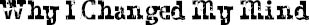

“WHO ELSE DID Mr. Tushman call?” I asked Mom later that night. “Did he tell you?”
“He mentioned Julian and Charlotte.”
“Julian!” I said. “Ugh. Why Julian?”
“You used to be friends with Julian!”
“Mom, that was like in kindergarten. Julian’s the biggest phony there is. And he’s trying so hard to be popular all the time.”
“Well,” said Mom, “at least Julian agreed to help this kid out. Got to give him credit for that.”
I didn’t say anything because she was right.
“What about Charlotte?” I asked. “Is she doing it, too?”
“Yes,” Mom said.
“Of course she is. Charlotte’s such a Goody Two-Shoes,” I answered.
“Boy, Jack,” said Mom, “you seem to have a problem with everybody these days.”
“It’s just …,” I started. “Mom, you have no idea what this kid looks like.”
“I can imagine.”
“No! You can’t! You’ve never seen him. I have.”
“It might not even be who you’re thinking it is.”
“Trust me, it is. And I’m telling you, it’s really, really bad. He’s deformed, Mom. His eyes are like down here.” I pointed to my cheeks. “And he has no ears. And his mouth is like …”
Jamie had walked into the kitchen to get a juice box from the fridge.
“Ask Jamie,” I said. “Right, Jamie? Remember that kid we saw in the park after school last year? The kid named August? The one with the face?”
“Oh, that kid?” said Jamie, his eyes opening wide. “He gave me a nightmare!! Remember, Mommy? That nightmare about the zombies from last year?”
“I thought that was from watching a scary movie!” answered Mom.
“No!” said Jamie, “it was from seeing that kid! When I saw him, I was like, ‘Ahhh!’ and I ran away. …”
“Wait a minute,” said Mom, getting serious. “Did you do that in front of him?”
“I couldn’t help it!” said Jamie, kind of whining.
“Of course you could help it!” Mom scolded. “Guys, I have to tell you, I’m really disappointed by what I’m hearing here.” And she looked like how she sounded. “I mean, honestly, he’s just a little boy—just like you! Can you imagine how he felt to see you running away from him, Jamie, screaming?”
“It wasn’t a scream,” argued Jamie. “It was like an ‘Ahhh!’” He put his hands on his cheeks and started running around the kitchen.
“Come on, Jamie!” said Mom angrily. “I honestly thought both my boys were more sympathetic than that.”
“What’s sympathetic?” said Jamie, who was only going into the second grade.
“You know exactly what I mean by sympathetic, Jamie,” said Mom.
“It’s just he’s so ugly, Mommy,” said Jamie.
“Hey!” Mom yelled, “I don’t like that word! Jamie, just get your juice box. I want to talk to Jack alone for a second.”
“Look, Jack,” said Mom as soon as he left, and I knew she was about to give me a whole speech.
“Okay, I’ll do it,” I said, which completely shocked her.
“You will?”
“Yes!”
“So I can call Mr. Tushman?”
“Yes! Mom, yes, I said yes!”
Mom smiled. “I knew you’d rise to the occasion, kiddo. Good for you. I’m proud of you, Jackie.” She messed up my hair.
So here’s why I changed my mind. It wasn’t so I wouldn’t have to hear Mom give me a whole lecture. And it wasn’t to protect this August kid from Julian, who I knew would be a jerk about the whole thing. It was because when I heard Jamie talking about how he had run away from August going ‘Ahhh,’ I suddenly felt really bad. The thing is, there are always going to be kids like Julian who are jerks. But if a little kid like Jamie, who’s usually a nice enough kid, can be that mean, then a kid like August doesn’t stand a chance in middle school.